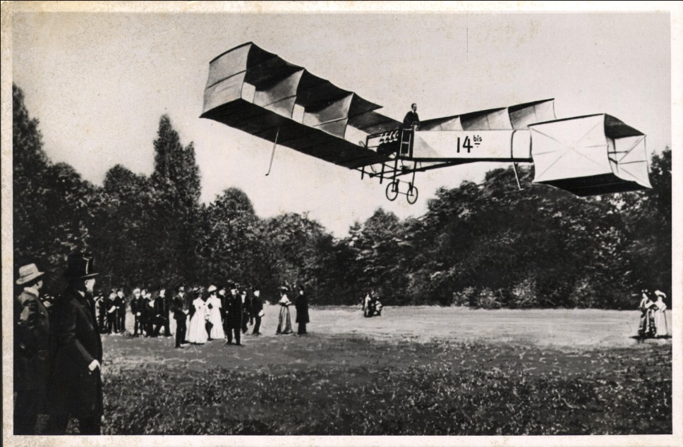

PROJETO 01
História do 14 Bis
Site informativo desenvolvido para apresentar a história do 14 Bis e a contribuição de Santos Dumont para a aviação.
O projeto reúne informações históricas, ficha técnica da aeronave, galeria de imagens, mapa interativo e formulário de contato. Seu desenvolvimento permitiu praticar a estruturação de conteúdos e a estilização de páginas web.
HTML
CSS
Acessar projeto